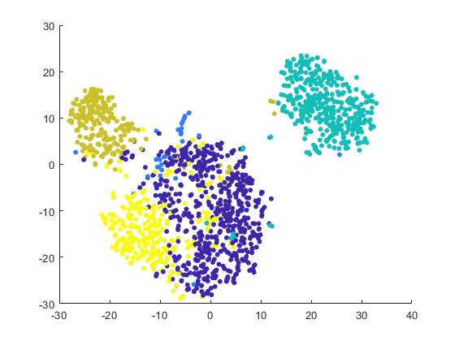
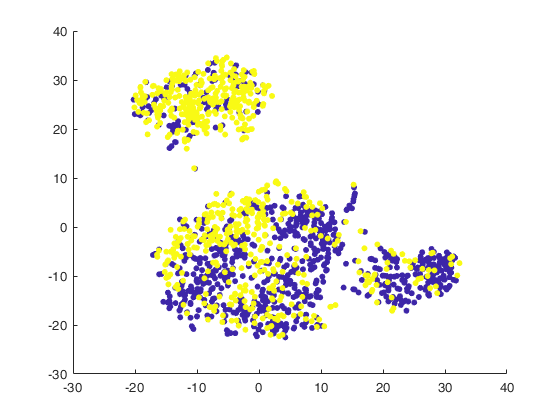
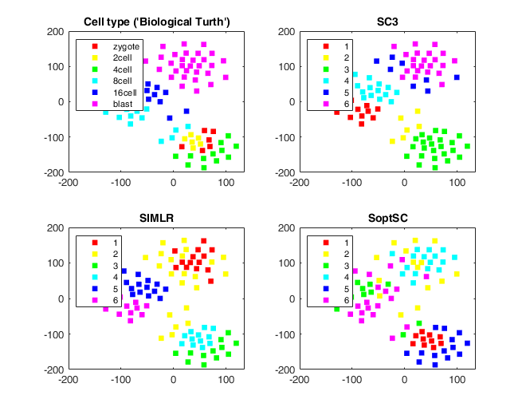

cdgea;
[X,genelistx]=sc_readfile('example_data/GSM3204304_P_P_Expr.csv');
[Y,genelisty]=sc_readfile('example_data/GSM3204305_P_N_Expr.csv');
[X,genelistx]=sc_selectg(X,genelistx,3,1);
[Y,genelisty]=sc_selectg(Y,genelisty,3,1);
[genelist]=intersect(genelistx,genelisty,'stable');
i=startsWith(genelist,'MT-');
genelist(i)=[];
[~,i1]=ismember(genelist,genelistx);
[~,i2]=ismember(genelist,genelisty);
X=X(i1,:); genelistx=genelist;
Y=Y(i2,:); genelisty=genelist;
cellidx=[1*ones(size(X,2),1); 2*ones(size(Y,2),1)];
C=sc_cluster_x([X Y],5,'type','simlr');
s=sc_tsne([X Y],2,false,true,false);
figure;
scatter(s(:,1),s(:,2),20,C,'filled')
figure;
scatter(s(:,1),s(:,2),20,cellidx,'filled')
[X,genelist]=sc_readtsvfile('example_data/yan.csv');
t=readtable('example_data\yan_celltype.txt');
celltypelist=string(t.cell_type1);
rng(235); showlegend=true;
s=sc_tsne(X,2);
c1=run.SC3(X,6);
c2=run.SIMLR(X,6);
c3=run.SoptSC(X,'k',6);
load example_data/sc3_results.txt
c0=sc3_results;
Cal_NMI(c0,c1)
Cal_NMI(c0,c2)
Cal_NMI(c0,c3)
fh=figure;
subplot(2,2,1)
gscatter(s(:,1),s(:,2),celltypelist)
if showlegend, legend('Location','northwest'); else, legend off; end
title('Cell type (''Biological Turth'')')
subplot(2,2,2)
gscatter(s(:,1),s(:,2),c1)
if showlegend, legend('Location','northwest'); else, legend off; end
title('SC3')
subplot(2,2,3)
gscatter(s(:,1),s(:,2),c2)
if showlegend, legend('Location','northwest'); else, legend off; end
title('SIMLR')
subplot(2,2,4)
gscatter(s(:,1),s(:,2),c3)
if showlegend, legend('Location','northwest'); else, legend off; end
title('SoptSC')
fh.Position=[fh.Position(1) fh.Position(2)-100 fh.Position(3)+100 fh.Position(4)+100];
Reading example_data/GSM3204304_P_P_Expr.csv ...... done.
Reading example_data/GSM3204305_P_N_Expr.csv ...... done.
Using 2000 HVGs.
Library-size normalization...done.
Reading example_data/yan.csv ...... done.
Library-size normalization...done.
Log(x+1) transformation...done.
Processing Euclidean distance matrix... 1/3
Calculating cluster array: 100% [..........]done
Processing Spearman distance matrix... 2/3
Calculating cluster array: 100% [..........]done
Processing Pearson distance matrix... 3/3
Calculating cluster array: 100% [..........]done
CLUSTER ENSEMBLES using CSPA
wgraph: writing graph0
U:\GitHub\scGEAToolbox\+run\thirdparty\ClusterPack>pmetis graph0 6
**********************************************************************
METIS 3.0 Copyright 1997, Regents of the University of Minnesota
Graph Information ---------------------------------------------------
Name: graph0, #Vertices: 90, #Edges: 1347, #Parts: 6
Recursive Partitioning... -------------------------------------------
6-way Edge-Cut: 18003630, Balance: 1.07
Timing Information --------------------------------------------------
I/O: 0.009
Partitioning: 0.001 (PMETIS time)
Total: 0.010
**********************************************************************
sgraph: partgraph1000.bat completed - loading graph0.part.6
clusterensemble: cspa at 0.80911
CLUSTER ENSEMBLES using HGPA
wgraph: writing graph2
wgraph: 90 vertices and 108 non-zero hyperedges
U:\GitHub\scGEAToolbox\+run\thirdparty\ClusterPack>shmetis graph2 6 5
*******************************************************************************
HMETIS 1.5.3 Copyright 1998, Regents of the University of Minnesota
HyperGraph Information -----------------------------------------------------
Name: graph2, #Vtxs: 90, #Hedges: 108, #Parts: 6, UBfactor: 0.05
Options: HFC, FM, Reconst-False, V-cycles @ End, No Fixed Vertices
Recursive Partitioning... --------------------------------------------------
Bisecting a hgraph of size [vertices=90, hedges=108, balance=0.50]
The mincut for this bisection = 8888832, (average = 26938099.2) (balance = 0.49)
Bisecting a hgraph of size [vertices=44, hedges=37, balance=0.33]
The mincut for this bisection = 0, (average = 10734499.2) (balance = 0.32)
Bisecting a hgraph of size [vertices=30, hedges=24, balance=0.50]
The mincut for this bisection = 27962784, (average = 28160313.6) (balance = 0.47)
Bisecting a hgraph of size [vertices=46, hedges=62, balance=0.33]
The mincut for this bisection = 6913536, (average = 11759184.0) (balance = 0.35)
Bisecting a hgraph of size [vertices=30, hedges=43, balance=0.50]
The mincut for this bisection = 19629504, (average = 20018390.4) (balance = 0.50)
--------------------------------------------------------------------------
Summary for the 6-way partition:
Hyperedge Cut: 63394656 (minimize)
Sum of External Degrees: 126789312 (minimize)
Scaled Cost: 1.88e+004 (minimize)
Absorption: 105.13 (maximize)
Partition Sizes & External Degrees:
14[6049344] 14[29320800] 16[29444256] 16[13333248] 15[29012160]
15[19629504]
Timing Information ---------------------------------------------------------
Partitioning Time: 0.043sec
I/O Time: 0.021sec
*******************************************************************************
sgraph: partgraph0010.bat completed - loading graph2.part.6
clusterensemble: hgpa at 0.80947
CLUSTER ENSEMBLES using MCLA
mcla: preparing graph for meta-clustering
wgraph: writing graph1
U:\GitHub\scGEAToolbox\+run\thirdparty\ClusterPack>pmetis graph1 6
**********************************************************************
METIS 3.0 Copyright 1997, Regents of the University of Minnesota
Graph Information ---------------------------------------------------
Name: graph1, #Vertices: 108, #Edges: 1265, #Parts: 6
Recursive Partitioning... -------------------------------------------
6-way Edge-Cut: 11486970, Balance: 1.09
Timing Information --------------------------------------------------
I/O: 0.022
Partitioning: 0.000 (PMETIS time)
Total: 0.022
**********************************************************************
sgraph: partgraph0100.bat completed - loading graph1.part.6
clbtocl: delivering 6 clusters
clbtocl: average posterior prob is 0.77949
clusterensemble: mcla at 0.87619
Iter Err
1, 6.867832
2, 5.876795
3, 5.042887
4, 4.362326
5, 3.807127
6, 3.351183
7, 2.973775
8, 2.658954
9, 0.711817
10, 0.112101
11, 0.103572
12, 0.098797
13, 0.093055
14, 0.087015
15, 0.081145
16, 0.075632
17, 0.070527
18, 0.062194
19, 0.050105
20, 0.034833
21, 0.017597
22, 0.019880
ans =
0.9398
ans =
0.8200
ans =
0.5464
  